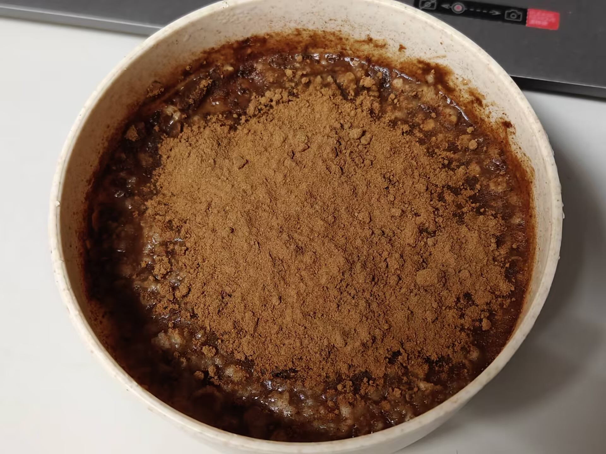

2026年10月26日 · 随笔
我的第一篇文章
今天，我开始学习制作网站了。
希望在这里，记录每一次小小的进步。
阅读全文 →MY PERSONAL BLOG
这里收藏我的日常、思考、灵感，以及正在成为的自己。
我会在这里记录生活、学习和成长。
2026年10月26日 · 随笔
今天，我开始学习制作网站了。
希望在这里，记录每一次小小的进步。
阅读全文 →2026年10月25日 · 大学生活
新的环境，新的朋友，还有许多等待探索的事情。
阅读全文 →
2026年10月27日 · 早餐记录
一份简单的早餐，和一场发生在凌晨的驱蚊战斗。
阅读全文 →生活记录 · 01
这里收藏我的日常、思考、灵感，以及正在成为的自己。